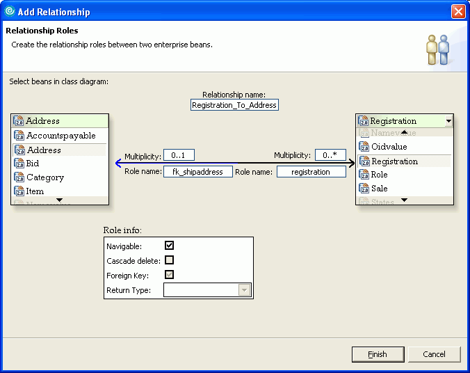
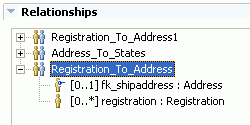

Use the Add Relationship wizard to specify the relationship between
two enterprise beans in your EJB project or module. The appropriate finder
methods are generated to support any relationships that you create.
Note: If a relationship exists between one or more CMP beans, changing
the key shape of one CMP may result in the related CMPs being regenerated.
The
following image shows the Add Relationship wizard with the Registration_To_Address
relationship being created. A single registered user can have multiple shipping
addresses on record, so the multiplicity is [0..*]. On the other hand, a shipping
address has a [0..1] relationship with the registered user, and the fk_shipaddress
role is added to the foreign key.

To
create a relationship between two enterprise beans (EJB 2.x):
- In the Project Explorer view of the J2EE perspective, open the
EJB Deployment Descriptor editor for the EJB module that includes the enterprise
beans that you want to associate.
- On the Overview page of the editor, scroll down to the Relationships
2.0 section, and click Add. The Add Relationship wizard
appears.
Tip: When you open the wizard from the Overview
page, the beans for both sides of the relationship can be edited. The wizard
can also be opened from the Bean page of the editor with a bean selected.
- In each of the lists of beans, select one enterprise bean.
- In the Relationship name field accept the
suggested name or type a new name for the relationship.
- Modify or accept the generated Role names.
- Specify the multiplicity for each part of the relationship.
- Hover your mouse pointer over either half of the diagram to specify
additional role information for each role:
- Navigable means that instances of the other
bean in the association can be retrieved using this role
- Cascade delete means that deletions will cascade
to the other relationship role.
- Foreign Key means that the specified enterprise
bean of the relationship holds a foreign key for the other relationship role.
- Click Finish.
The following image shows the Registration_To_Address relationship
in the Relationships section of the EJB deployment descriptor editor:

After you create a relationship, you can select the relationship
in the deployment descriptor editor and click the Edit button
to modify it, or click the Remove button to remove
the relationship. Deleting the relationship role also deletes the relationship.